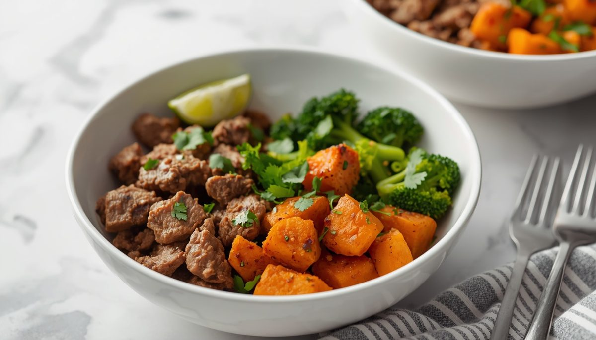
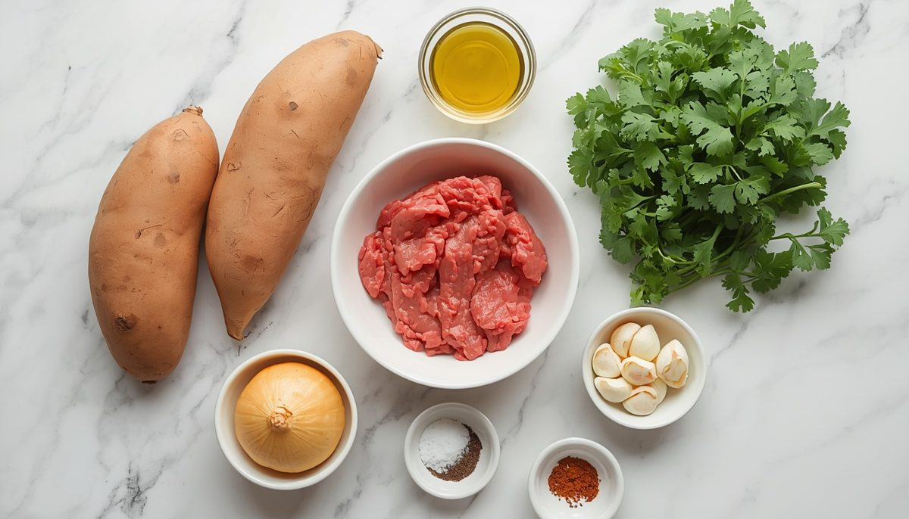
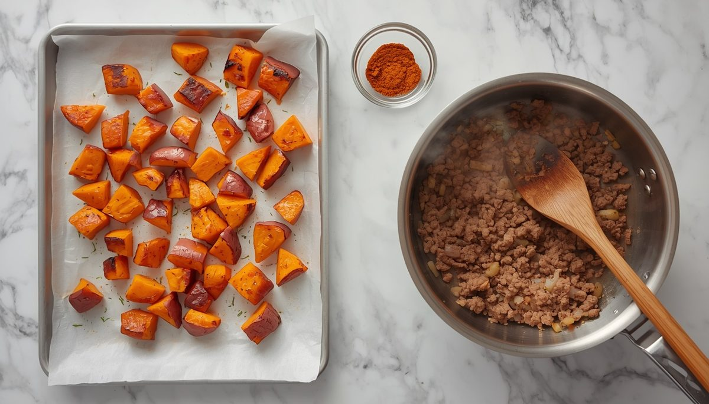
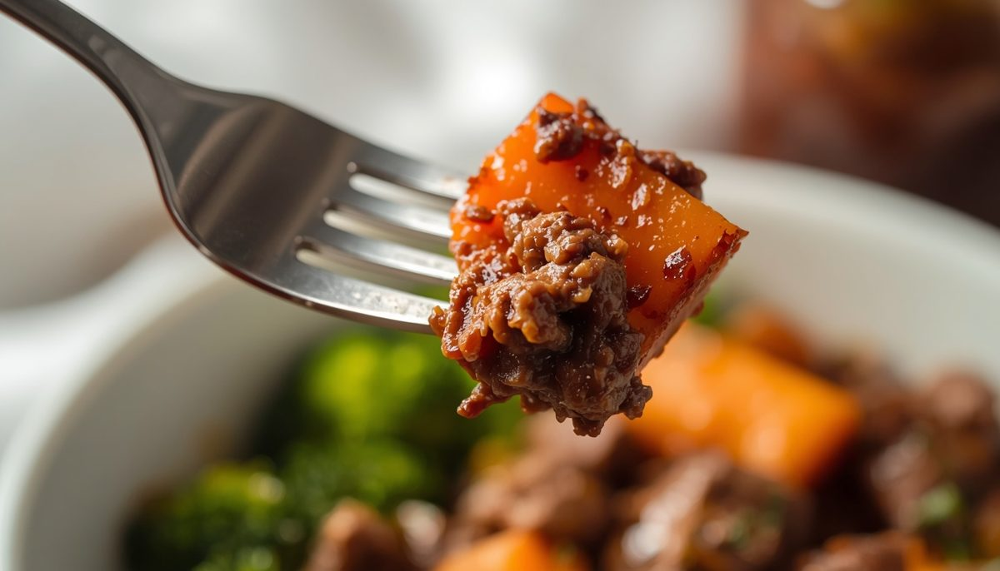
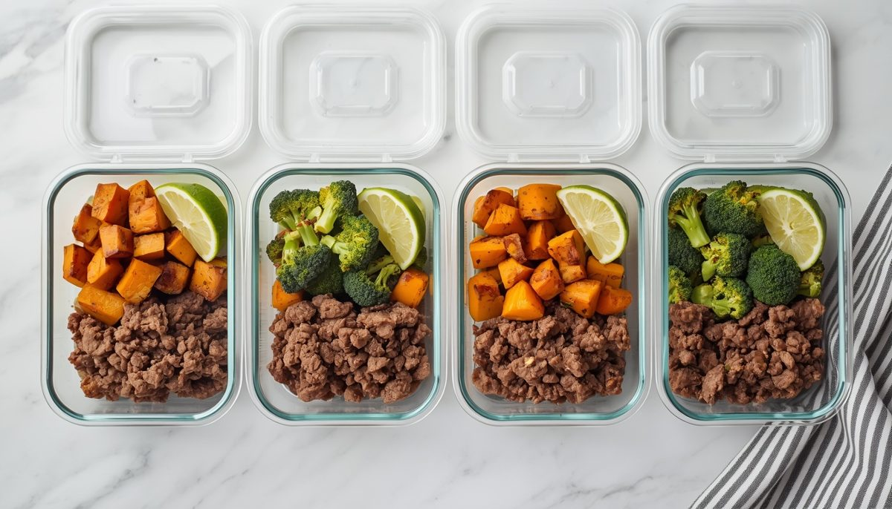

High-Protein Beef & Sweet Potato Meal Prep Bowls (Easy Meal Prep for Work)
Per serving (1 container, about 350g). Nutrition is an estimate and varies with brands.

A burrito bowl without the tortilla, built for easy meal prep for work. Smoky seasoned beef, roasted sweet potato and tender broccoli share a container, and a squeeze of lime ties it all together.
Each bowl lands at 35g protein and 440 calories, and the oven does most of the work while you cook the beef. It is cheap, filling and reheats well all week.
Want a Chipotle-style bowl? Add black beans and salsa, and use a spoonful of Greek yogurt instead of sour cream.
Ingredients

- 2 medium sweet potatoes (about 1.5 lb / 680g), peeled and cut into 3/4 inch (2cm) cubes
- 1 tbsp (15ml) olive oil, divided
- 1 medium yellow onion, diced
- 4 cloves garlic, minced
- 1.25 lb (570g) lean ground beef (beef mince), 93% lean
- 1 tbsp (8g) paprika (smoked paprika adds extra depth), divided
- 1 tsp salt, divided
- 1/2 tsp black pepper
- 4 cups (350g) broccoli florets
- 1/4 cup (10g) chopped cilantro (coriander)
- 1 lime, cut into wedges
Instructions
- Heat the oven to 425°F (220°C). Line a baking tray with parchment (baking paper).
- Toss the sweet potato with 2 tsp of the olive oil, half the paprika and 1/2 tsp of the salt. Spread on the tray and roast for 20 minutes, turning once, until tender and browned at the edges.
- While the potatoes roast, heat the remaining 1 tsp oil in a large skillet (frying pan) over medium-high heat. Cook the onion for 3 minutes, then add the garlic and cook for 30 seconds.
- Add the ground beef. Break it up with a wooden spoon and cook for 6 to 7 minutes until browned. Stir in the remaining paprika, 1/2 tsp salt and the pepper.

- Steam the broccoli for 3 to 4 minutes until bright green and just tender. A microwave with 2 tbsp water and a lid works too.
- Divide the beef, sweet potato and broccoli across 4 containers. Top with cilantro and a lime wedge.

Meal Prep, Storage and Reheating

- Fridge: keeps for 4 days in airtight containers.
- Freezer: the beef and sweet potato freeze well for up to 2 months. Broccoli turns soft when frozen, so add it fresh.
- Reheat: microwave for 2 to 3 minutes, stirring halfway.
- Lime: squeeze it on after reheating for the brightest flavor.
Quick Questions
Can I use ground turkey or chicken? Yes. Use the same weight. Cook until no pink remains.
What can I use instead of sweet potato? Butternut squash works well, and so does regular potato.
Can I make the sweet potatoes in an air fryer? Yes. Air fry at 400°F (200°C) for 12 to 15 minutes, shaking the basket halfway.